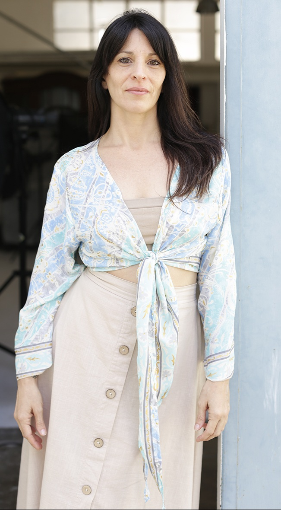

Conoceme
¡Hola! Soy Jessica María Carmona; desde hace muchos años que he decidido abrazar mi energía creativa y
también emprendedora. La combinación de la creatividad de mi madre y la fortaleza que me transmitió mi
padre han enriquecido mi desarrollo vital, valores y visión de las ideas y proyectos.
Nací en la ciudad de Buenos Aires, bajo un sol en Acuario, ascendente y luna en Aries, venus en Piscis.
En mi adolescencia, marcada por la curiosidad y un toque de rebeldía, comencé la búsqueda del
autoconocimiento y autodescubrimiento que, hasta aquí, ha sido un viaje repleto de lecciones y
oportunidades de crecimiento.
Mi interés e inspiración por la lectura, la filosofía y las artes expresivas me llevó a investigar
diversos recursos terapéuticos y de índole espiritual desde joven. Fue así como a los 18 años ingreso a
la universidad para estudiar psicología, con cierta esperanza de encontrar algunas respuestas a mis
cuestionamientos existenciales.
En medio de una crisis, decido viajar y explorar nuevas partes del mundo. Fue entonces cuando descubrí mi primer libro serio sobre la sabiduría de Oriente, donde leía sobre como la meditación y la filosofía espiritual ofrecían otras
perspectivas y formas de vivir. Aun sin mucho conocimiento, plante una semilla que crecería y
florecería con el tiempo.

Paralelamente me desempeñé como bailarina, maestra de danzas y métodos de acondicionamiento psicofísico. Durante un largo periodo aborde el campo de la salud a través de las artes expresivas, la conciencia corporal y la danzaterapia. Participe y también organicé talleres, charlas, seminarios nacionales e internacionales.
A raíz de un desequilibrio físico que marca un antes y un después en mi estilo de vida, empiezo a profundizar en el yoga y la meditación para recuperar el equilibrio interior. Me certifico como profesora bajo la guía de maestros de la rica tradición y sistemas de enseñanza de India, quienes me han incentivado a compartir este camino con otros durante 15 años.
En la actualidad, integro todos estos años de proceso de consciencia, mi labor como Acompañante Terapéutica y en el estudio del Arbol Genealógico. Comprendiendo mi autobiografía; dejando de definirme e identificarme con una única identidad para contribuir desde el sentir y la totalidad que somos, promoviendo el empoderamiento y transformación personal.
Si has llegado hasta aquí, te invito a ser parte del Proyecto CreAndo Armonía en ComUnidad, donde te guio en el viaje que yo misma he transitando y sigo comprobando hacia una vida más plena a nuestro alcance y en armonía con nosotros mismos/as.